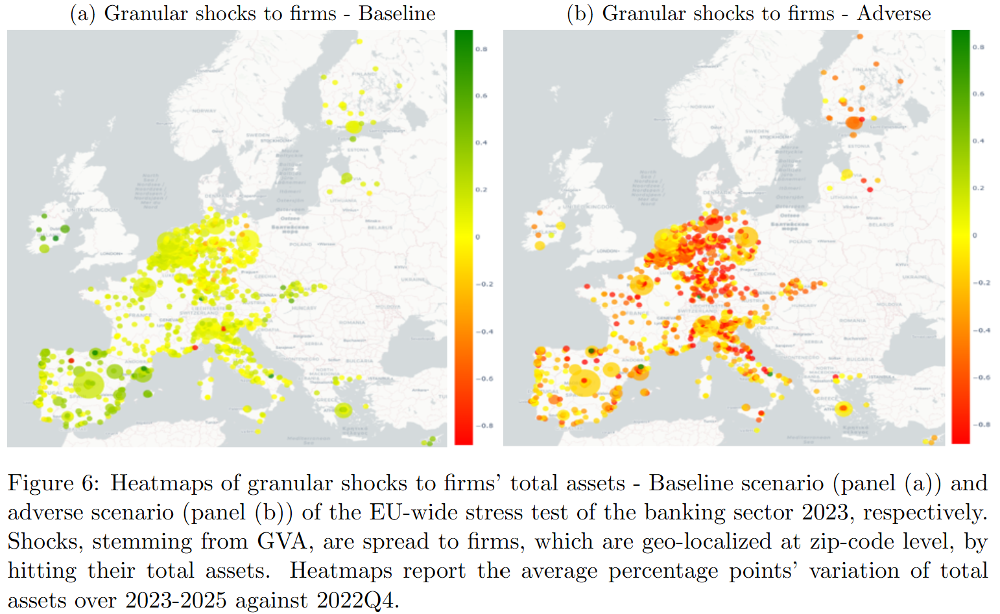
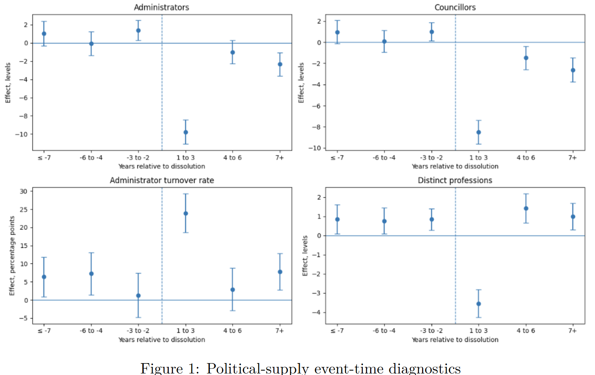
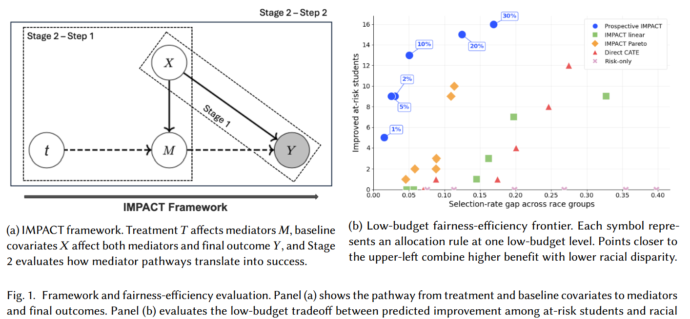

Samuele Scaglioni
Incoming MA student in Economics at the University of Chicago
European Central Bank | Macro-finance | Financial Stability | Applied Econometrics
I am an incoming Master of Arts student in Economics at the University of Chicago and currently an Analyst at the European Central Bank. My work at the ECB has covered supervisory analytics, financial stability, stress testing, model development, and data strategy.
My research combines applied econometrics and machine learning to study credit risk, financial institutions, economic policy, political economy, and the allocation of scarce interventions.
Research interests
I am interested in empirical and computational methods for studying financial institutions, systemic risk, macro-financial linkages, economic policy, and resource allocation.
Links
Selected research
Learning Probability of Default and Stress Testing
With Luca Nocciola · Working paper, 2026
A granular machine-learning framework for predicting the probability of default of European non-financial firms and transmitting stressed firm-level risk to banks through credit exposures.

Institutional Cleansing and Political Scars
With Nordine Abidi and Ixart Miquel-Flores · Working paper, 2026
Evidence on how mafia-related municipal dissolution in Italy affects electoral participation, the local political supply, and firms' credit conditions.

IMPACT: Pathway-Aware and Equity-Audited Allocation under Scarce Resources
With Hadis Anahideh · Work in progress, 2026
A pathway-aware decision-support framework for allocating scarce interventions under uncertainty, with individual-level consistency checks and group-level equity diagnostics.

See the research page for full abstracts, all working papers, and work in progress.